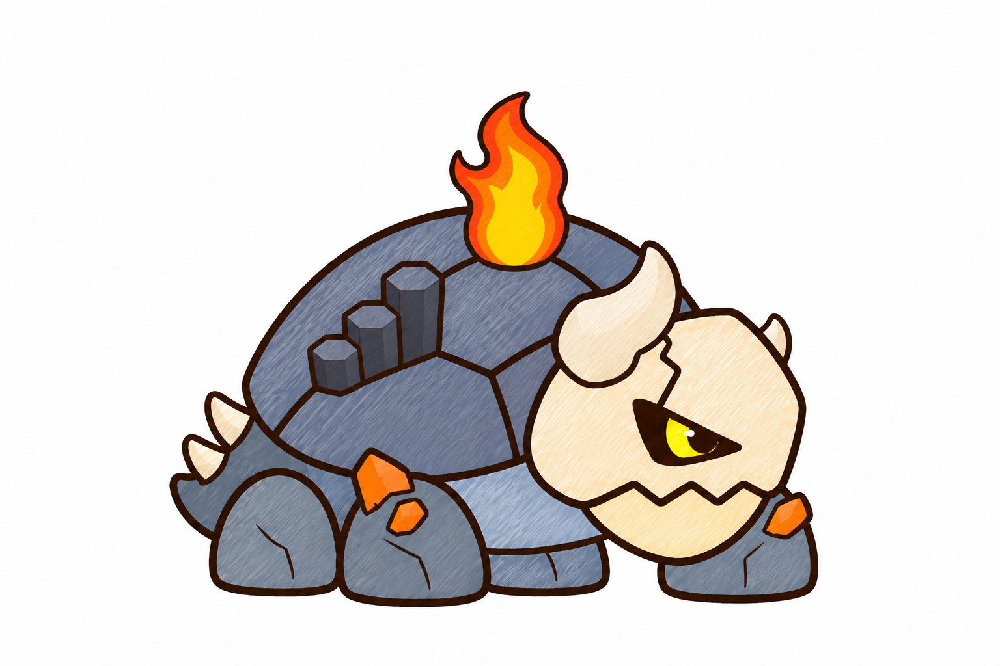
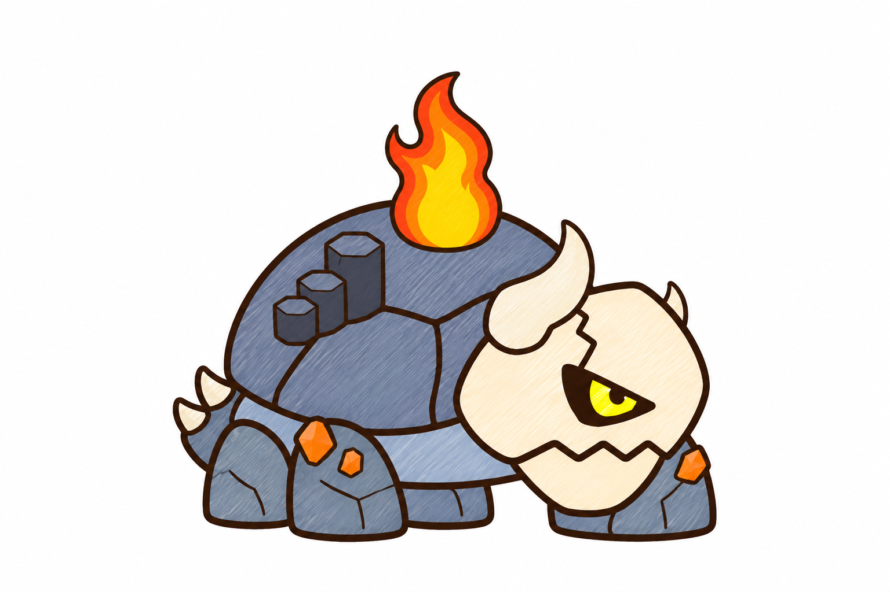
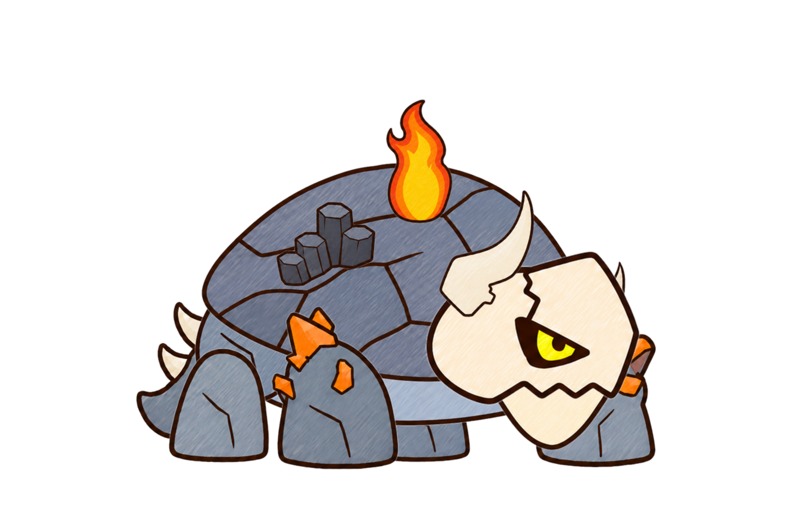
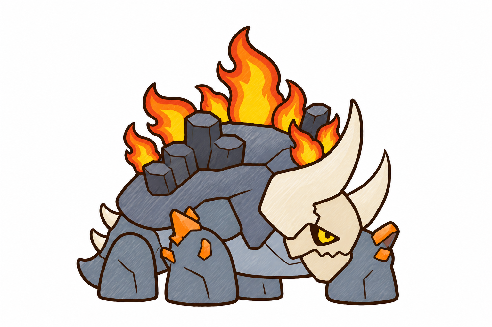
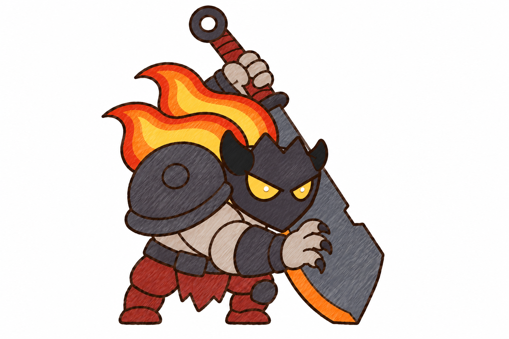
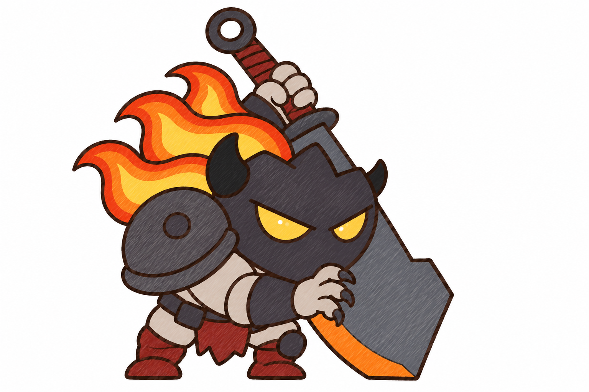
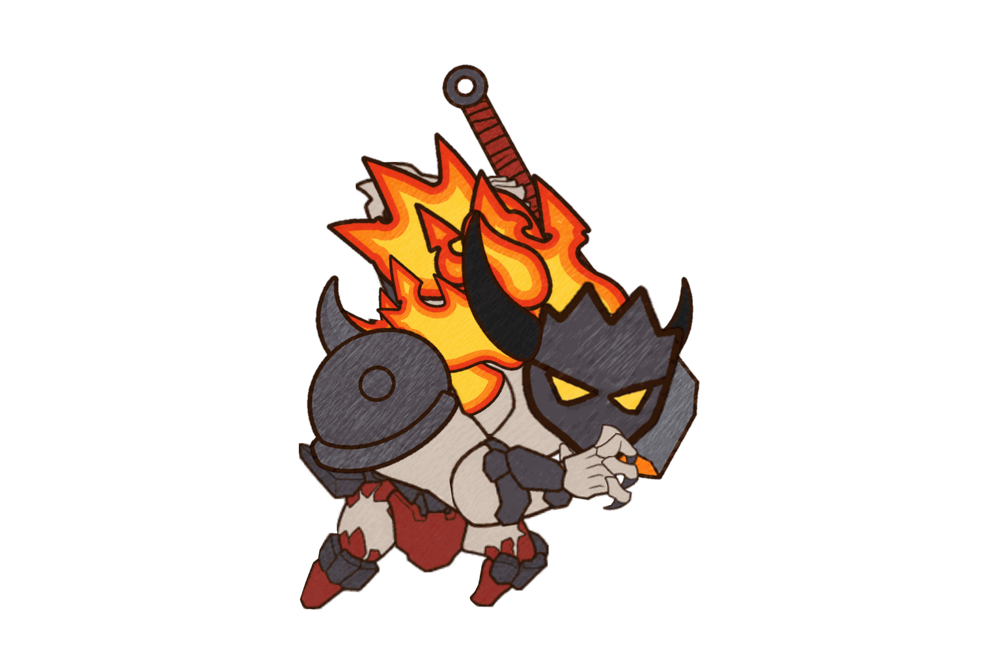
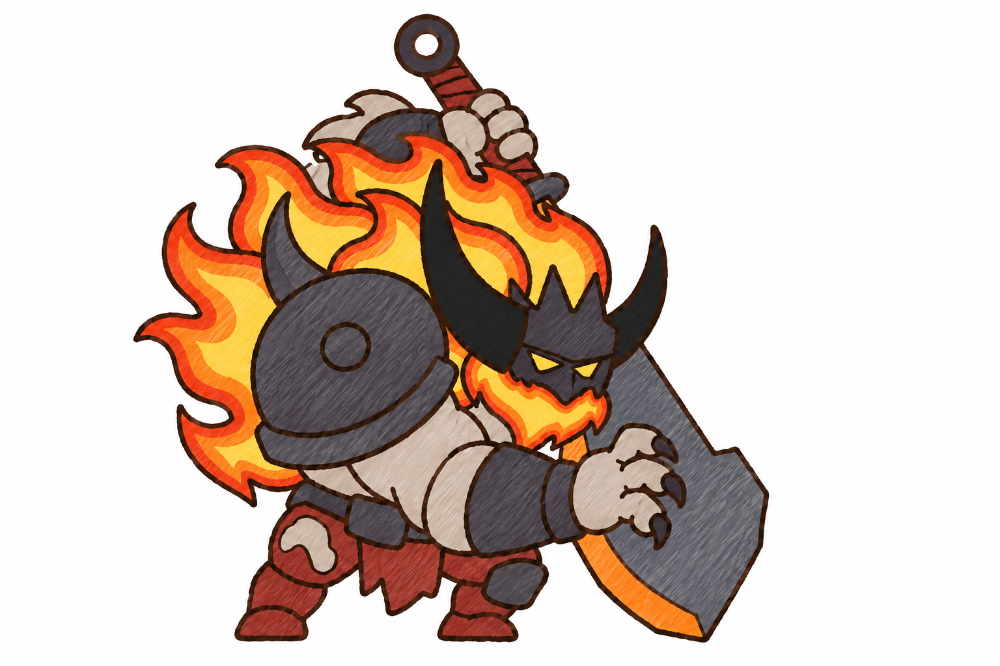

Concept dạng 1 (chibi): suất 5 Hỏa Quy và suất 7 Viêm Đao, đảo Hỏa
Gen 2026-11-14 ở máy ổ D. Mỗi con hai hướng (đề xuất của Claude). Bạn chọn hướng hoặc dặn sửa, rồi mình làm mảnh, rig, clip tiến hóa và đưa vào game.
Suất 5: Hỏa Quy Con (chọn một)

ATheo bản E: giữ chỗ đặt của bản E đang ở trong game, vẽ lại nét chibi (đầu khoảng 45 %).

BTròn hơn: mai tròn ngắn như hòn cuội, chân lùn hẳn, đầu gần nửa chiều cao.

Bản E đang ở trong game (ghép từ mảnh dạng 2 co giãn)

Dạng 2 đã duyệt (Hỏa Quy)
Suất 7: Viêm Đao dạng 1 (chọn một)

ATheo bố cục: quỷ con đầu to (khoảng 45 %), sừng mầm, bờm lửa ba búi, không râu lửa, giáp vai không gai, đao dài bằng thân.

BTròn hơn: đầu gần nửa chiều cao, thân tròn lùn, tay chân ngắn hẳn, đao ngắn bè như dao phay.

Bố cục: rig dạng 2 đổi tỉ lệ xương (đầu 1,45, sừng 0,5, bờm 0,5–0,62, đao 0,72, thân 0,9), ẩn râu lửa

Dạng 2 đã duyệt (Viêm Đao)